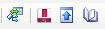

Une connexion à une base de données relationnelle SQL Server permet d'extraire le schéma relationnel de la base
 Un élément de menu permet de choisir le serveur, un autre la base de données sur le serveur
(si on dispose des droits nécessaires.
Un élément de menu permet de choisir le serveur, un autre la base de données sur le serveur
(si on dispose des droits nécessaires.
Le programme extrait alors du dictionnaire de données, la liste des tables et leur structure ainsi que les contraintes référentielles.
Il affiche enfin le schéma relationnel sous forme graphique comme le montre le schéma ci-contre.
Une nouvelle partie de la barre de menu permet diverses actions :
A partir d'un schéma relationnel, le programme reconstruit le schéma entité-association correspondant.
A chaque relation est associé une entité, les couples relations-liens sont traduits en contraintes référentielles et éventuellement en relations.